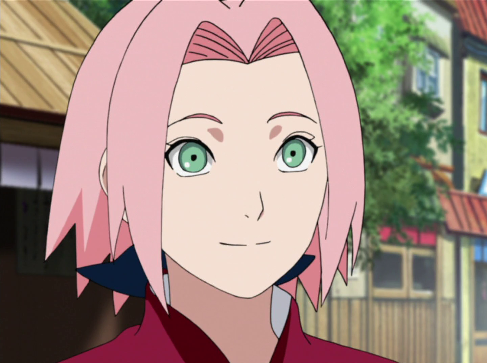

Sakura Uchiha (うちはサクラ, Uchiha Sakura; batizada Haruno (春野) inicialmente) é uma kunoichi de nível jōnin do clã Uchiha, após se casar, de Konohagakure. Ela é designada como um membro do Time Kakashi, mas rapidamente encontra-se mal preparada para os deveres de um ninja e as complicações das vidas de seus companheiros de equipe. Treinando sob a tutela de sua mestra, Tsunade, ela se torna uma kunoichi mais forte e uma excelente ninja médica, sendo capaz de enfrentar os desafios de uma vida como um ninja, bem como ajudar e proteger seus amigos e entes queridos quando eles precisarem dela. Anos após a Quarta Guerra Shinobi, ela forma sua própria família com Sasuke Uchiha.